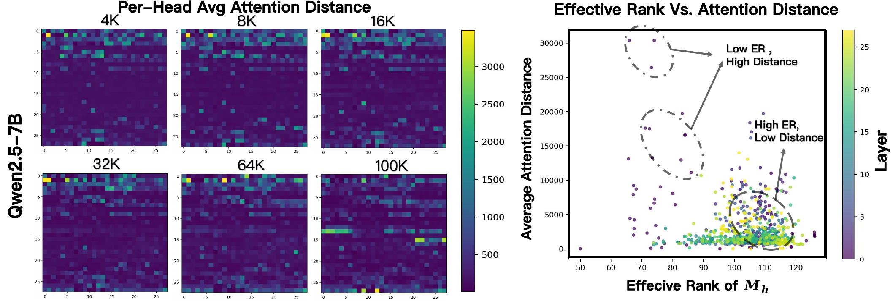
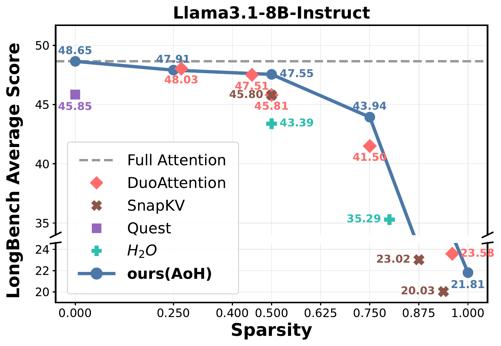
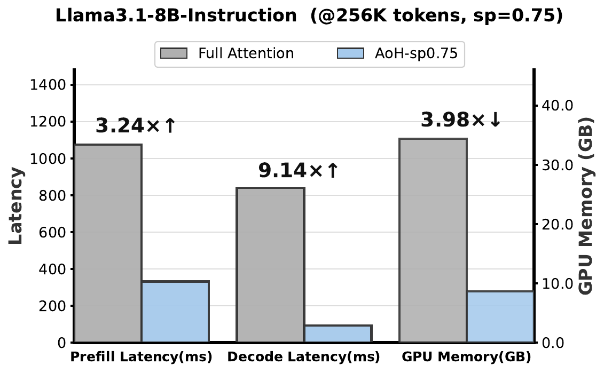
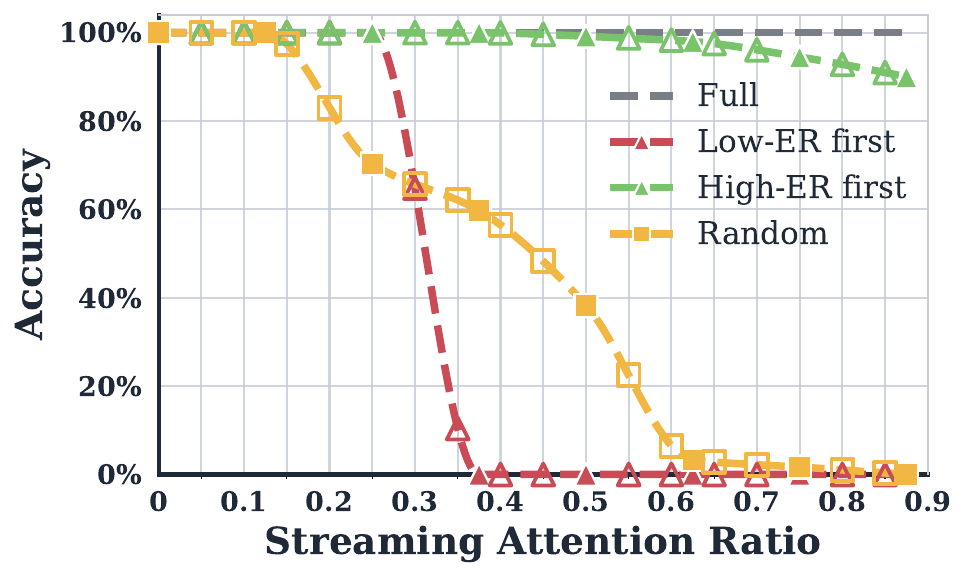
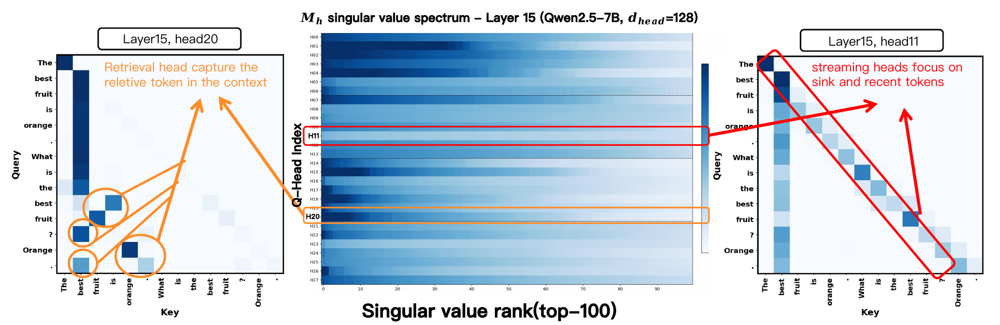
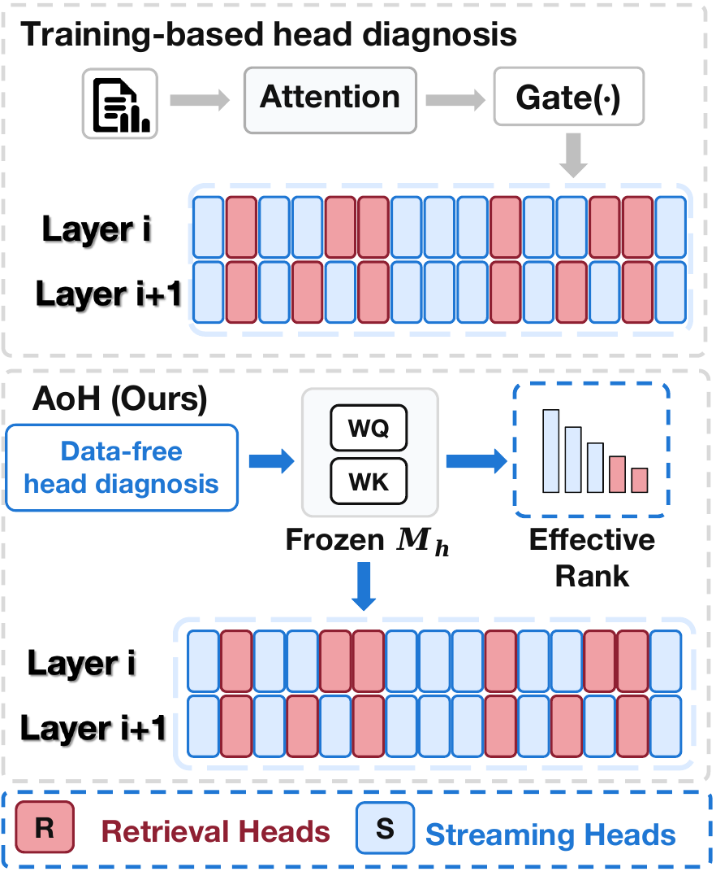
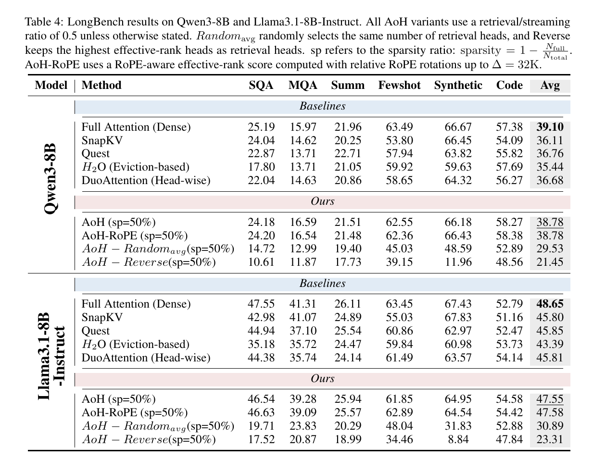
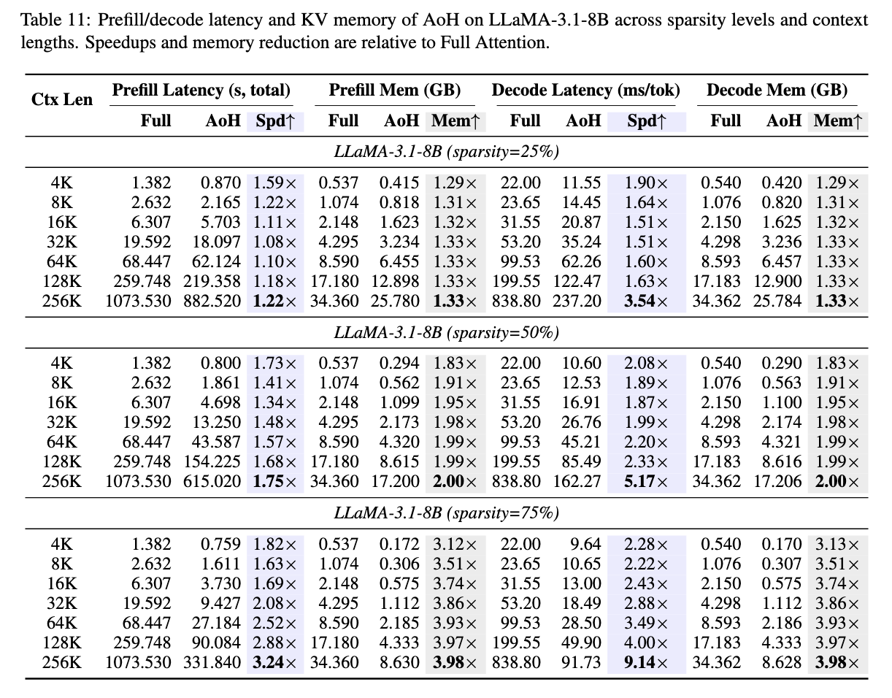

Abstract
Long-context LLM inference faces quadratic attention cost and growing KV-cache memory. Existing sparse attention methods rely on runtime attention, calibration prompts, or learned gates, making head selection input-dependent and costly. We instead ask whether head function can be inferred directly from frozen weights. We propose Autonomy-of-Heads (AoH), a data-free and training-free method that identifies retrieval and streaming heads from the spectral geometry of query-key projections. AoH defines the kernel attention operator Mh = WKh⊤WQh and uses its effective rank as a weight-space measure of head function: concentrated spectra indicate a small number of dominant query-key matching directions and are associated with retrieval heads, whereas diffuse spectra indicate the absence of a dominant global matching direction and are associated with streaming heads. We further derive an efficient dhead-dimensional computation that avoids constructing the full dmodel × dmodel matrix. Experiments on LongBench across models show that AoH provides a strong data-free head classifier and achieves competitive accuracy with substantially reduced attention computation and KV-cache budgets. In efficiency, AoH achieves up to 3.24× faster prefill, 9.14× faster decode, and 3.98× KV-cache memory reduction at 256K tokens.


Accuracy-efficiency trade-off of AoH.
Llama3.1-8B-Instruct efficiency at 256K context and 75% sparsity, where AoH achieves 3.24× prefill speedup, 9.14× decode speedup, and 3.98× GPU memory reduction.
Observations: Effective rank reflects stable head behavior.
We first ask whether frozen query-key geometry reflects stable and functional differences among attention heads. Across context lengths, per-head average attention distance remains structurally stable, suggesting that long-range attention is a persistent head-level property rather than a prompt-length artifact.
Effective rank is consistently negatively correlated with long-range behavior. Lower-effective-rank heads tend to attend farther into the context, while higher-effective-rank heads are more local. A passkey-retrieval ablation further shows a clear functional separation: converting low-effective-rank heads to sink-plus-recent attention rapidly collapses retrieval accuracy, whereas converting high-effective-rank heads has little impact.
Passkey retrieval under progressive head-to-streaming conversion. Restricting low-ER heads to sink-and-recent attention rapidly collapses retrieval accuracy, while restricting high-ER heads has little impact.

Heads Know What They Know!

Visualization of the Mh singular value spectrum and attention maps in the Qwen2.5-7B model for the sentence “The best fruit is orange. What is the best fruit? Orange.”, showing that concentrated spectra correspond to retrieval heads while uniform spectra correspond to streaming heads. Left: Retrieval heads (e.g., Layer 15, Head 20) attend selectively to contextually relevant tokens, requiring full attention. Center: Mh singular value spectrum heatmap; orange-highlighted rows (concentrated spectrum) are retrieval heads, red-highlighted rows (uniform spectrum) are streaming heads. Right: Streaming heads (e.g., Layer 15, Head 11) focus on sink and recent tokens, sufficient with sliding-window attention.
Method: Autonomy-of-Heads from frozen query-key geometry.
During decoding, the attention score of head h can be written as scoresh,i = XctxWKh⊤WQhxi. The context matrix and query vector are shared across heads, while the middle operator is head-specific. We therefore define the kernel attention matrix Mh = WKh⊤WQh, which connects query-side information demand to key-side information supply.
AoH uses the effective rank of Mh to quantify spectral concentration. Low-effective-rank heads are classified as retrieval heads, which retain access to global context. High-effective-rank heads are classified as streaming heads, which use sink tokens and a recent-window cache. Because AoH depends only on frozen weights, the classification is computed once per model before any prompt is processed.
Directly constructing the full dmodel × dmodel matrix is unnecessary. The nonzero singular values can be obtained from the smaller dhead × dhead proxy Ch = (WQhWQh⊤)(WKhWKh⊤), reducing the computation to a low-dimensional eigenvalue problem.

Experiments
We evaluate AoH on LongBench, a long-context understanding suite covering 21 tasks across six categories. The main models are Qwen2.5-7B, Qwen3-8B, and Llama3.1-8B-Instruct. Unless otherwise stated, streaming heads retain 128 sink tokens and a 256-token recent window, and the main experiments use 50% per-layer sparsity.
With 50% sparsity, AoH remains close to Full Attention while reducing KV budgets by half. On Qwen3-8B, AoH reaches an average score of 38.78 versus 39.10 for dense attention. On Llama3.1-8B-Instruct, AoH reaches 47.55 versus 48.65 for dense attention. Under the same budget, AoH substantially outperforms random and reversed effective-rank selections.

LongBench results on Qwen3-8B and Llama3.1-8B-Instruct. All AoH variants use a retrieval/streaming ratio of 0.5 unless otherwise stated. Randomavg randomly selects the same number of retrieval heads, and Reverse keeps the highest effective-rank heads as retrieval heads. sp refers to the sparsity ratio: sparsity = 1 − Nfull/Ntotal. AoH-RoPE uses a RoPE-aware effective-rank score computed with relative RoPE rotations up to Δ = 32K.

Prefill/decode latency and KV memory of AoH on LLaMA-3.1-8B across sparsity levels and context lengths. Speedups and memory reduction are relative to Full Attention.
Conclusion
We presented Autonomy-of-Heads (AoH), a data-free and training-free method for identifying retrieval and streaming heads from frozen query-key geometry. By analyzing the effective-rank of the kernel attention matrix Mh = WKh⊤WQh, AoH replaces calibration data and learned gates with a one-time weight-space classifier. Across multiple long-context LLMs, AoH preserves 96.5% Full Attention performance on average at 50% sparsity and consistently outperforms random, reversed head selection, and training-free baselines. On the hardware side, AoH achieves up to 3.24× prefill speedup and 9.14× decode speedup at 256K context on Llama3.1-8B, while reducing KV-cache memory by up to 3.98× under 75% sparsity. More broadly, AoH provides a simple and extensible head prior for sparse attention, and can be combined with existing KV-cache compression or token-selection methods to improve long-context inference without additional training.